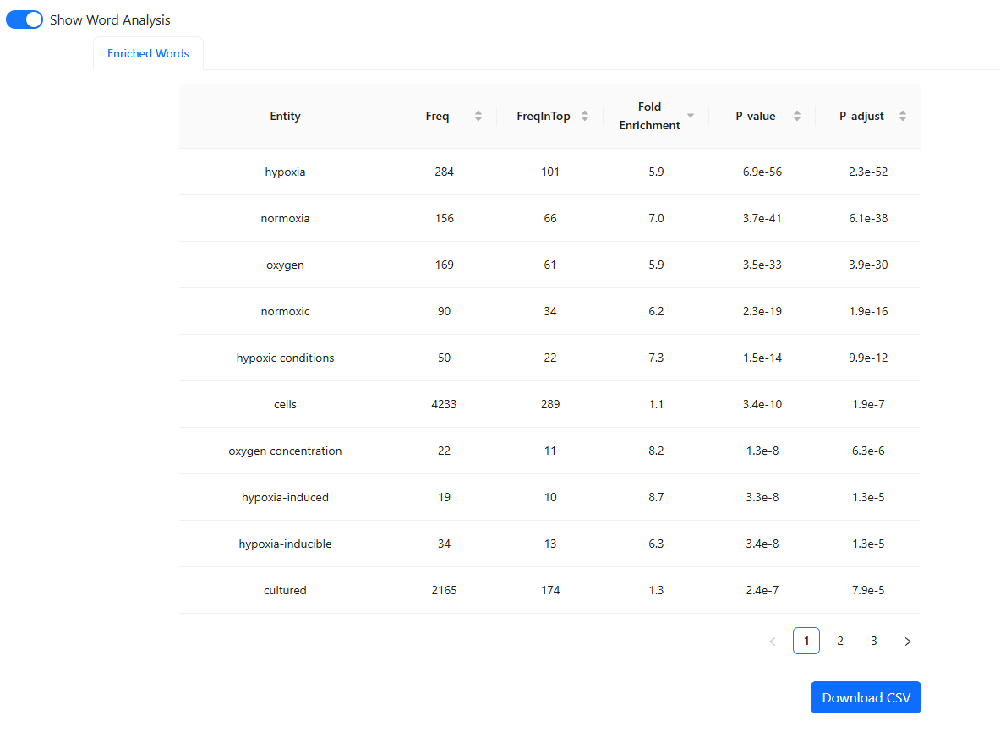
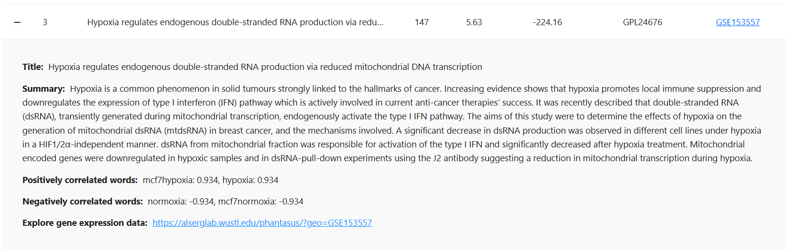

Search Results#
The Search Results section provides detailed findings from your gene query, organized into two key areas: Enriched Words and Matched Experiments. The interface includes tools for exploration, filtering, and exporting results for further analysis.
You can view an example of search results for the HSA Hallmark Hypoxia [2] gene set input by visiting the following URL: https://alserglab.wustl.edu/coresh/load/hsa_hallmark_hypoxia
Enriched Words#
{kind=link}
This table highlights key terms that are significantly associated with the submitted gene list. The analysis is based on the top 300 matched experiments from the search results, ensuring that only the most relevant and statistically significant terms are shown.
Statistical Methods#
Statistical Test: The exact Fisher test is used to assess the significance of term enrichment.
Multiple Comparison Adjustment: The Benjamini-Hochberg (BH) procedure is applied to control for false discovery rates, ensuring robust results.
Table Columns#
Entity: The enriched word or term.
Freq: The total frequency of the term across all available experiments in the database.
FreqInTop: The frequency of the term within the top 300 matched experiments.
Fold Enrichment: The fold increase in term frequency in the top-ranked experiments compared to its background frequency in all experiments.
P-value: The raw significance of the term’s association with your gene list. Lower values indicate stronger associations.
P-adjust: Adjusted P-value (using BH adjustment) for multiple comparisons, providing a more stringent significance threshold.
Features#
Show Word Analysis Toggle: Toggle to show or hide the enriched words table.
Download CSV: Export the enriched words table for offline analysis.
This section is crucial for identifying biological themes or experimental conditions related to the submitted gene list, based on the most relevant experiments.
Matched Experiments#
{kind=link}
This section lists experimental datasets from the Gene Expression Omnibus (GEO) database that are most relevant to your query. Each experiment provides insights into how your gene set aligns with existing gene expression data.
Table Columns#
Rank: The relevance rank of the experiment relative to your query.
Title: The title of the dataset, summarizing the experiment.
Size: The number of genes in the dataset.
pctVar: Percentage of explained variance in the dataset accounted for by the submitted gene list. This shows the impact of your gene set on the dataset’s variability.
log10 P-adjust: The logarithm (base 10) of the adjusted P-value, where more negative values indicate higher statistical significance.
GPL: The platform ID used for the experiment (e.g., microarray or sequencing platform).
GSE: A clickable link to the corresponding experiment in the GEO database for further exploration.
Expanded Details#
{kind=link}
Expanded Summary: Click the “+” icon next to each record to view additional details, such as positively and negatively correlated words, experiment summaries, and relevant metadata.
Explore Gene Expression Data: Direct links allow users to explore experiment data in detail using external tools like the Phantasus Web App [3] for interactive visualization and analysis.
Features#
Search Records: A search bar lets users filter matched experiments by keywords, titles, or GSE IDs.
Pagination: Navigate large result sets using pagination, with customizable entries per page.
Download CSV: Export the complete table of matched experiments for external analysis.
Conclusion#
The Search Results section, with its Enriched Words and Matched Experiments subsections, provides a comprehensive analysis of your gene query. The Enriched Words analysis focuses on the top 300 matched datasets, identifying statistically significant biological terms or experimental conditions using the exact Fisher test with BH adjustment for multiple comparisons. The Matched Experiments section connects your gene set to the most relevant GEO datasets, offering valuable insights into gene coregulation patterns and experimental data.
Features like keyword search, expandable summaries, and data export ensure that this tool supports both high-level insights and in-depth exploration for gene expression analysis.